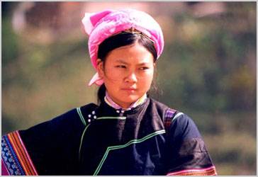
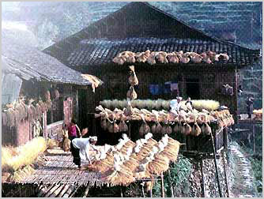
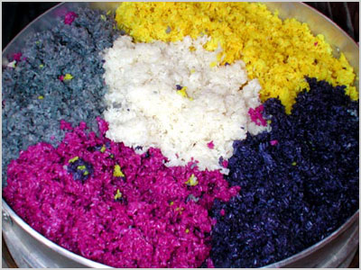
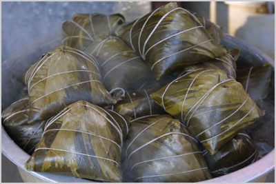
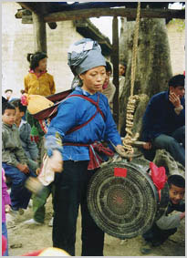
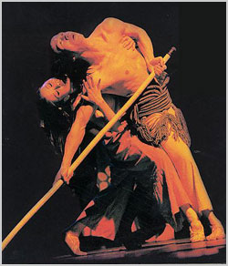

壮族是我国少数民族中人口最多的一个民族，约有一千五百四十八万人（一九九零年）。主要聚居于广西壮族自治区的南宁、百色、河池、柳州四个地区，在云南文山壮族苗族自治州，广东省连山壮族瑶族自治县，贵州省从江县等地，也集居有壮族；还有散居在湖南省江华瑶族自治县。
壮族居住的地方，基本上连接成一片，大部分聚居，也有相当一部分和汉、瑶、苗、侗、仫佬、毛南、水等族杂居。
壮族是一个历史悠久的民族。壮、布壮，原是壮族自称。在汉文史书中译写为“撞”或“僮”等，读音“壮”，最早见于宋代文献中。
壮语属汉藏语系壮侗语族壮傣语支。有南北两个大方言，但语法结构、基本词谍大体相同。南宋时，曾出现“土俗字”。这种文字是在汉字的基础上创造出来的，使用范围不广，多使用汉文。
壮族分布地区，西北多山，如元宝山、九万大山、都阳山、大明山、大瑶山和十万大山等。中部丘陵起伏，素有“广西盆地”之称。壮族地区气候温和，年平均温度在摄氏20°左右，冬无严寒，南部夏季酷热。四季草木常青，百花盛开，风景奇特瑰丽，有众多的岩洞和地下河流的桂林，素有“桂林山水甲天下，阳朔山水甲桂林”之称，是我国著名的旅游胜地。这里多热带、亚热带作物，盛产水果，有甘蔗、香蕉、龙眼、荔枝、菠萝、柚、芒果等。驰名中外的三七、蛤蚧和茴油，是壮族地区素负盛名的特产。

壮族少女
人种服饰
壮族男装多为破胸对襟的唐装，不穿长裤，冬天穿鞋戴帽（或包黑头巾），夏天免冠跣足。节日或走亲戚穿云头布底鞋或双钩头鸭嘴鞋。壮族妇女的服饰端庄得体，朴素大方。她们一般的服饰是一身蓝黑，裤脚稍宽，头上包着彩色印花或提花毛巾，腰间系着精致的围裙。上衣分为对襟和偏襟两种，有无领和有领之别。在边远山区，壮族妇女还穿着破胸对襟衣，无领，绣五色花纹，镶上阑干。下身穿长裤，裤脚膝盖处镶上蓝、红、绿色的丝织和棉织阑干。壮族妇女普遍喜好戴耳环、手镯和项圈。服装花色和佩戴的小饰物，各地略有不同。上衣的长短有两个流派，大多数地区是短及腰的，少数地区上衣长及膝。

干栏屋舍
民居建筑
壮族住房最具特色的是“干栏”式房子，称为干栏建筑。它可分为全楼居式，半楼居式，地居式等几类。一般都分上下两层及阁楼等三部分。上层住人，多数为三开间，也有五开间和七开间的，进门是厅堂，厅后是火塘间，用作煮饭和取暖。楼阁在上层，多用于存放粮食。
生活方式
嚼槟榔是壮族的传统习俗，今广西龙州等地壮族妇女仍流行。有些地方，槟榔是招待客人的必需品。
尊老爱幼是壮族人的一种礼规习俗。在任何场合，不尊敬老人都被看成是没有教养、缺乏道德的行为，会受到社会舆论的谴责。爱幼的明显表现是社会舆论严厉虐待儿童行为。婴儿的母亲缺奶，村里所有哺乳期的母亲都乐意给婴儿喂奶。客人到家先敬白酒一碗，客人不喝会被视为对主人失礼、不敬。
壮族人民在生活和生产领域里还有许多禁忌。不管是什么样的禁忌，外人都不宜违禁，否则会引起反感，损害团结。例如不准用脚踩灶，也不能用器物拍打灶，这是普遍的禁忌。妇女生育未满三周，禁止外人进入卧室。禁止在灶上煮狗肉；客人夫妇来家留宿，禁止同房等等。

五色糯米饭
节日文化
壮族节日多与当地汉族相同。比较具有民族特点的是“中元节”、“牛魂节”和“吃立节”。七月十四日的“中元节”又称“鬼节”，是仅次于春节的大节日。这天，家家户户宰杀鸡鸭并蒸五色糯米饭祭祖及其它野鬼。“牛魂节”，又称“牛王节”、“开秧节”。多数在春耕以后的一天进行。有的地区固定于农历四月初八进行。这天，各家都带着一篮五色糯米饭和一束鲜草，到牛栏旁边祭牛魂，然后把一半食品及鲜草分给每只耕牛吃。据说，因为耕牛在春耕中被人们呵叱鞭打而失魂，故立此节为耕牛招魂。

壮乡粽子
饮食文化
壮族的主食以大米为主，次为玉米、芋头及黑饭豆、白饭豆和绿豆等。壮族的豆饭、肉末粥、竹节焖饭都芳香可口，别有风味。壮族的节日食品显示出浓郁的民族特色，如色香味俱佳的五色饭、糍粑、油堆和沙糕；有外形奇特的各色粽子，吃法与众不同的包生饭，金灿灿的粘小米饭，以及无论节日或平时都受欢迎的米粉。每年三月初三歌节，家家都做五色饭，吃五色蛋。
拌吃生血是桂西人喜爱的菜肴。做法是将带热气的生猪血、牛羊血、鸡鸭血倒入干净盘中，不停地搅动它，不使凝结，然后把加佐料炒熟的肉和下水趁热倒下去，拌匀使血凝结即可食用。壮族人认为生血有营养，可增血补气，非贵客难以享用到。壮族的酸鱼和酸肉，烤整猪、纸包鸡、烤整鸡鸭等都是壮族人民招待贵宾和外国游客的佳肴。

壮族青蛙节
宗教文化
壮族信仰多神，崇拜祖先和巨石、老树、高山、土地、龙蛇、鸟类等。唐代以后，道教影响较深，乡间有半职业的道公，人们经常请他们进行驱鬼、打斋等宗教活动。近代以来，一些外国传教士到壮族城镇建立基督教、天主教教堂，发展教徒，但影响始终局限于部分城镇居民。
人生礼仪
壮族的婚姻为一夫一妻制，与汉族通婚现象较为普遍。过去婚姻由父母包办，但婚前恋爱自由。现在恋爱的方式有抛绣球、打木槽、赶歌圩、对歌等。壮族结婚仪式丰富多彩，有的地区女子步行出嫁。平果“布陇”女子佩刀出嫁，天峨县白定一带新郎到女家娶亲，有的是新郎和伴郎到女方寨子对歌，对赢了才能娶亲。广西桂西壮族地区还保存着一种古老的“入赘”风习。“入赘”即男子要嫁到女子家去生活。即使家里儿女皆全，也甘心情愿把儿子“嫁”出去，将女婿招上门来。
在丧葬上，壮族一般为木棺土葬。部分地区有“拣骨重葬”的习俗，即人死埋葬若干年（一般为三年），将遗骨拣出，投入瓦瓮（又称金坛）内密封再葬。

壮族史诗歌剧《妈勒访天边》
文体游艺
壮族的文化艺术丰富多彩，历史悠久，特点突出。如花山崖壁画，大约已有两千年以上的历史，主要分布在广西西南部左洒两岸的峭壁上，已经发现有五十处。以宁明县花山崖壁画最为著名，画面长达百余米，高四千余米，有一千三百多个人像。人像最大的高三米许，小的约三十厘米，间有铜鼓、铜锣和动物的形象。笔调粗犷有力，在一定程度上，反映了古代壮族先民的社会生活情况。
铜鼓，已有两千多年的历史，目前仅广西出土和收藏的就有五百面以上。铜鼓的类型很多，大小不一，最大的直径达一米以上。重量小者几十斤，大者上千斤。鼓面有浮雕的花纹饰物，鼓身有花纹图案。用途历来说法不一，有军乐、民乐、祭乐、以及权力财富的象征等等说法。
壮锦是壮族妇女独创的手工艺品。以棉纱为经、丝绒为纬。经线一般为原色，纬线用各种彩色，织成种种美丽的花纹图案。可用作被面、台布、背带、围裙、手提袋等。
壮族的民间文学有神话、童话、故事、传说、歌谣等。壮族一向以能歌著称，壮族地区歌多歌美，到处都可听到嘹亮悦耳的歌声。壮歌的特点是善于触景生情，托物取喻，以猜谜、盘问的形式，唱出有声有色、动人心弦的歌词。传说唐代有个著名的女歌手刘三姐，创造了悠扬的声调，寓意深远的歌谣，歌颂人们从事劳动和爱情的幸福，揭露反动统治者的残暴，因而至今仍得到各族人民的传颂。解放以前，集体唱壮歌的特定场所叫“歌圩”。“歌圩”是定期的，各地圩日不一。到圩日时，远近几十里内的青年男女，都盛装汇集于此，对唱山歌，以表达爱情，进行社交活动。
壮族民间常用的乐器有唢呐、蜂鼓、铜鼓、铜铙、铜锣及笙、箫、笛、马骨胡等。壮族的舞蹈有“舂堂蹈”、“绣球舞”、“捞虾舞”、“采茶舞”、“扁担舞”、 “铜鼓舞”等等。舞蹈的特点是主题鲜明，舞步雄捷，诙谐活泼，感情逼真，时而激昂慷慨，时而缠绵悱恻，充分体现了壮族劳动人民的倔强和爱憎分明的性格。
壮戏是壮族民间文学、音乐、舞蹈、技艺的综合性艺术。壮戏又可分为师公戏、北路壮戏、南路壮戏数种。